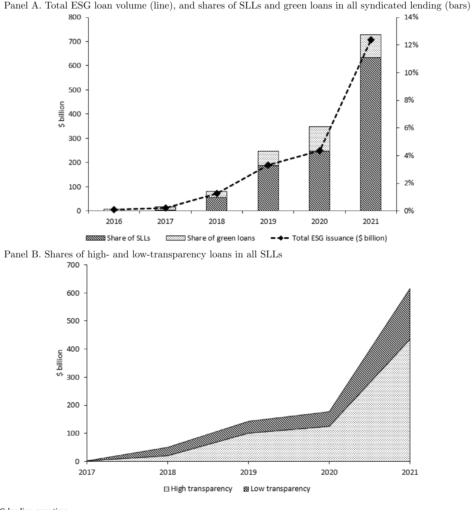
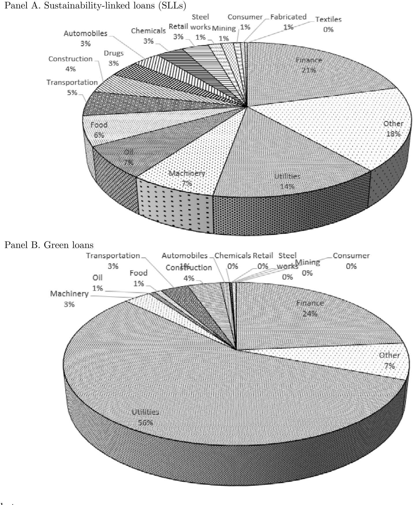
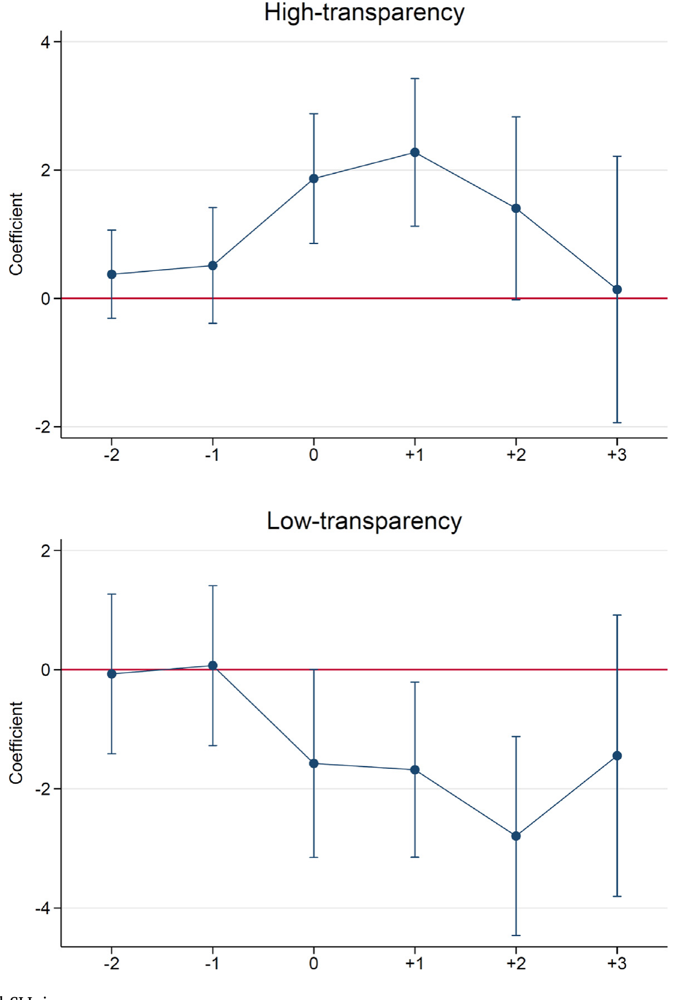
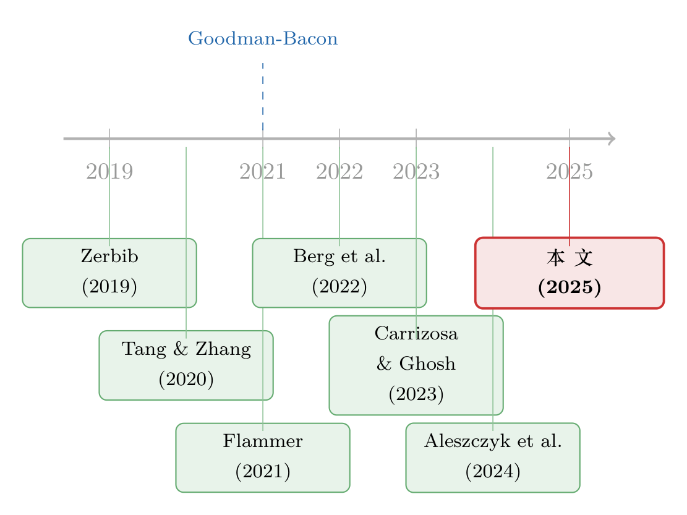

给「绿色」贴个标签，到底值多少钱？——ESG 贷款里那场公开的合谋
本文读的是 Kim, Kumar, Lee & Oh (2025, Journal of Financial Economics)：过去十年里，企业疯狂地借入一种把贷款利率和自己 ESG 表现挂钩的「可持续发展挂钩贷款」(sustainability-linked loans, SLLs)，全球规模从不到 100 亿美元暴涨到 7000 亿美元以上。但作者发现，这类贷款并没有让任何借款人的 ESG 真的变好。真正决定故事走向的，是这份合同披露得透不透明：把条款公开的高透明度借款人，是在为自己早就达标的 ESG「盖个章」(certification)；把条款藏起来的低透明度借款人，则在贴一张空标签漂绿 (greenwashing)——他们的 ESG 在借款之后反而显著恶化。而两类人，都为这张标签付了一笔不小的钱。
1 一张越来越值钱、却越来越廉价的标签
先讲一个张力。
过去十年，企业融资市场里冒出了一个长得很「绿」的新物种。它不是绿色债券，也不是绿色贷款——那两样东西的钱必须专款专用，只能拿去修风电场、种红树林、建污水处理厂。这个新物种叫可持续发展挂钩贷款 (sustainability-linked loans, 下称 SLL)：它是一笔通用用途的普通贷款，钱你随便花，但有一个钩子——贷款的利率被合同明确地钉死在你的 ESG 表现上。你 ESG 评分上去了，利息往下走；评分掉了，利息往上走。
听上去很美，对吧？这正是它疯长的理由。作者用 LSEG Loan Connector 的 DealScan 数据告诉我们：全球 ESG 贷款的规模，从不到 100 亿美元 一路飙到 7000 亿美元 以上，而推动这场指数级增长的，几乎全是这种通用用途的 SLL，而非专款专用的绿色贷款。到 2021 年，ESG 贷款已经占到全球银行贷款的 12.7%、占所有可持续债务发行的三分之一。更关键的是，它突破了行业的天花板：绿色债券和绿色贷款被死死按在公用事业 (utilities) 这一个行业里（公用事业占了绿色贷款发行的 56%、绿色债券的 32%），而 SLL 里公用事业只占 14%——也就是说，它是公用事业之外、各行各业唯一能用得上的「ESG 挂钩融资」工具。

Figure 1: ESG lending over time

Figure 3: ESG lending by industry
故事到这里都还是一个皆大欢喜的金融创新叙事。但真正的张力藏在合同的细节里。
你以为利率「钉死在 ESG 上」是个很硬的约束？看一个作者举的真实例子。Crown Holdings（纽交所：CCK）2019 年借的这笔 SLL，由 BNP Paribas 当「可持续发展代理人」盯着执行，KPI 是 Sustainalytics 给的可持续评级——评级每变动一档 (one-notch)，利率变动 2.5 个基点。2.5 个基点是什么概念？同期 HP Inc. 借的一笔循环信贷，约定如果标普评级从 A- 被下调一档到 BBB+，利差就要跳升 12.5 个基点。也就是说，传统的「评级挂钩」条款，一档的惩罚是 SLL「可持续挂钩」一档惩罚的五倍。
这就是整篇论文的火药引信：如果你「绿色承诺」没兑现，付出的代价小到几乎可以忽略，那么这份合同到底是在激励你变好，还是只是让你看上去想变好？
2 三个假设：激励、盖章，还是漂绿？
接着，一个自然的问题是：企业为什么要去借这种贷款？作者很克制地把可能的动机摆成三个互相竞争的假设，而整篇论文，本质上就是一场让这三个假设「对质」的实验。
第一个，「激励合同」(incentive contract) 假设。 SLL 是一份真刀真枪的激励合同：达标给你实打实的利差减免，没达标就罚。真心想改善 ESG 的企业会主动来借，因为它逼着自己变好。这个假设的可证伪预测很硬：挂钩的定价条款必须在经济上足够大，而且——借款之后，借款人的 ESG 表现应当相对控制组显著改善。
第二个，「盖章」(certification) 假设。 有些企业 ESG 本来就好，它来借 SLL，不是为了变好，而是为了把「我很好」这件事讲得更可信——找银行给自己背书。这类企业的预测是：发行前 ESG 就优于同行，发行后维持、但不会进一步改善；并且，为了让背书更可信，它有动机透明地公开合同条款；同时它愿意为这份「认证」多付利差和费用。
第三个，「漂绿」(greenwashing) 假设。 SLL 的标签，替代了真金白银改善 ESG 的努力。一张标签就足以安抚那些天真的利益相关者（或者那些自己也在漂绿的投资者）。这类企业根本没打算变好，合同条款既不严苛、也不公开。它的预测最反直觉、也最致命：借款之后，借款人的 ESG 反而会下降；但它同样愿意为这张空标签付钱。
你看出这三个假设巧妙在哪了吗？「盖章」和「漂绿」在「愿意为标签付钱」这一点上是一样的——光看价格分不开它们。把它们分开的，是两个变量：一个是借款后 ESG 到底变好、维持、还是变坏；另一个，是合同条款透明不透明。而「激励合同」假设和另外两个的分水岭只有一条：ESG 到底有没有改善。
于是作者要做的事，就清晰了：去量 ESG 在发行前后的轨迹，再按透明度把样本一切两半。
3 识别策略：把「透明度」做成一把手术刀
这篇论文最见功力的地方，不在某个花哨的计量技巧，而在它手工造出来的那个核心变量——透明度 (transparency)。
作者翻遍多个公开信源，逐笔去看一份 SLL 到底有没有向公众披露可度量的关键绩效指标 (key performance indicators, KPIs)、以及这些 KPI 是怎么和贷款条款挂钩的。按这个标准，样本里大约 37% 的 SLL 被归为低透明度——它们压根没公开拿什么指标、怎么挂钩。剩下的是高透明度。这一刀切下去，就把前面那个「盖章 vs 漂绿」的死结解开了。
然后是因果识别。基本设定是一个双重差分 (difference-in-differences, DiD)：比较「发了 SLL 的企业」和「没发的控制企业」在发行前后 ESG 表现的变化。但 DiD 最怕的就是「treated 和 control 本来就不一样」，而这里这个担忧尤其真实——作者一上来就承认，无论高低透明度，发行 SLL 的可能性都和借款人事前 ESG 评分显著正相关，说明能玩得起 ESG 承诺的，本来就是底子好的企业（典型的选择问题）。
作者的应对是层层加码：
- 倾向得分匹配 (propensity score matching)，照搬 Flammer (2021) 给绿色债券找对照组的做法，给每个 SLL 借款人配一个特征接近、但从不发 SLL 的「干净控制组」(clean control)。
- 用堆叠式 DiD (stacked DID)，并用 cohort 交互的年份固定效应和企业固定效应把回归喂得满满当当，来对冲交错处理 (staggered DID) 里因处理效应随时间变化而产生的偏误——这正是 Goodman-Bacon (2021) 和 Baker et al. (2022b) 反复警告过的那个陷阱。
- 担心不同评级机构给的 ESG 评分本身就吵架（Berg et al. (2022) 的著名「评级分歧」问题）？那就换上更硬、更不容易被操纵的指标——
S&P Trucost的排放强度 (emission intensity)，结论照样成立。 - 还嫌不够，再上 Abadie et al. (2010) 的合成控制法 (synthetic control) 和 Li et al. (2018) 的重叠权重 (overlap weights)，把处理组和控制组的协变量分布尽量校平。

Figure 4: ESG score dynamics around SLL issuance
数据这边交代一下底盘：贷款层面用 DealScan，样本期 2016–2021；ESG 表现来自 LSEG/Refinitiv 的 ESG 数据库，外加 S&P Trucost 的排放数据；观测单位是「企业 × 时间」。透明度变量则是作者自己一笔笔手工分类出来的。
4 反转：没人变好，但故事各不相同
好，把这把手术刀切下去，结果是什么？
先看「激励合同」假设——它第一个出局。 无论高透明度还是低透明度，借款人在发了 SLL 之后，企业内部 ESG 评分都没有事后改善的证据。既然没人因为这份合同变好，那它就不是一份真正的激励合同。前面 Crown Holdings 那 2.5 个基点的伏笔，在这里兑现了。
但真正关键的一步，在于把剩下的样本按透明度劈开之后——
于是反转出现。 两类借款人的 ESG 轨迹，分道扬镳（如图 4 所示）：
- 高透明度借款人：发行前 ESG 就好，发行后继续维持这份优越，既不进一步改善、也不恶化。这正是「盖章」假设的标准画像——我本来就好，我借这笔贷款、并把条款大大方方公开，是为了把「我好」这件事讲得让你不得不信。
- 低透明度借款人：发行后 ESG 表现显著恶化。把条款藏起来、ESG 还往下掉——这是「漂绿」假设几乎逐条命中的预测。
一句话记住这篇论文：透明度，是区分「认证」与「漂绿」的那道分水岭。 公开条款的人，在为自己已有的承诺背书；藏起条款的人，在用一张空标签替代真正的努力。
5 三条旁证：把「空标签」钉死
到这里，光凭 ESG 评分的轨迹，一个挑剔的读者还是会皱眉：评分会不会本身就有噪声？所以作者又补了三条独立的旁证，每一条都从不同角度去验证「低透明度 = 空标签」。
第一条，动用率 (drawdown)。 SLL 大多是循环信贷额度，挂钩定价只有在你真的去提款时才会变成真金白银的奖惩。作者发现，低透明度 SLL 的借款人，比匹配的控制组显著更不愿意去动用自己的额度；而高透明度借款人的动用率和控制组没差别。这意味着什么？低透明度借款人既不去享受达标的利差减免、也不去承担没达标的惩罚——挂钩定价对他们来说，本来就是个摆设。空标签，实锤。
第二条，再谈判 (renegotiation)。 高透明度 SLL 在借款人 ESG 改善更明显时，更不容易被重新谈判——因为达标能换来实打实的利差减免，犯不着回去改合同。而低透明度 SLL 里，ESG 改善和再谈判倾向之间毫无关系——因为那些挂钩条款对借款人本就无足轻重，改不改一个样。
第三条，股市反应 (event study)。 在 SLL 发行公告的事件研究里，股价对高透明度发行的反应，比对低透明度发行更正面。这说明公开市场的投资者是有眼力的——他们给真承诺鼓掌，对藏着掖着的空标签保持警惕（这呼应了 Hartzmark and Sussman (2019)、Bolton and Kacperczyk (2021)、Pastor et al. (2022) 关于投资者重视可持续承诺的一系列发现）。换句话说，公开资本市场，可能恰恰是约束这些私下谈判的贷款合同、保护外部利益相关者的那只手。
而那个最讽刺的事实始终没变：无论高透明度还是低透明度，两类借款人都为这张 SLL 标签付了一笔可观的钱——最高比匹配的传统贷款贵 18 个基点，而且这笔溢价主要来自贷款的服务费和各种 charges，而不是利差本身。盖章的人为可信度付费，漂绿的人为伪装付费，钱都进了银行的口袋。这也提示我们：是借款人的需求，而非银行的供给，在推着这个市场往前跑。
6 文献脉络：从绿色债券，到挂钩贷款的「成色」
把这篇论文放回它生长的那条线里看，会更清楚它补上了哪一块。
最早，可持续融资的研究几乎全长在公开市场那一侧，尤其是绿色债券：Zerbib (2019) 测出绿色债券存在一点点「绿色溢价」，Tang and Zhang (2020)、Flammer (2021) 系统刻画了绿债市场的成长与其对发行人的影响（Flammer 那套给绿债找对照组的匹配方法，后来直接被本文借去对付 SLL）。但绿债有个天生的局限：钱必须专款专用，于是它的覆盖面被锁死在少数几个行业。

接着，方法论这边也在进化。当大家越来越多地用交错 DiD 去估这类「谁先采纳、谁后采纳」的处理效应时，Goodman-Bacon (2021)、Baker et al. (2022b) 敲响了警钟——交错 DiD 在处理效应随时间变化时会出系统性偏误。本文老老实实地用堆叠式 DiD 和干净控制组绕开了这个坑。与此同时，Berg et al. (2022) 揭示了 ESG 评分在不同机构之间严重分歧，这逼着本文不能只信一家评分，而要用 Trucost 排放强度这种更硬的指标来交叉验证。
然后，关于 SLL 合同本身的研究开始涌现，但它们大多盯着合同条款：Carrizosa and Ghosh (2023) 用 SEC 文件看 SLL 里的报告与审计要求，Aleszczyk et al. (2024) 发现 SLL 普遍塞着无关痛痒的 KPI 和软弱的目标，Caskey and Chang (2022) 则用一个理论模型论证「造假成本越高、企业越愿意披露 ESG」。这些研究关心的是「条款本身好不好」。
而本文站的位置，是把镜头从「条款好不好」转到「条款公开不公开」。 它不去评判 KPI 选得对不对，而是先问一个更基础的问题：你到底有没有把它告诉公众？正是这个「透明度」的视角，让它得以调和此前研究里一堆看似矛盾的结论——为什么 Dursun-de Neef et al. (2025) 在欧洲样本里发现 SLL 之后 ESG 改善了，而 Du et al. (2024)、Auzepy et al. (2023) 却发现没有改善？本文的答案是：你们看的，其实是透明度光谱上的不同区段。高透明度那一端维持着好成色，低透明度那一端在恶化——把它们混在一起平均，自然会得出互相打架的结论。
（关于 ESG 投资如何反过来抬高成本、以及「绿色」标签的定价究竟值多少，这个博客此前聊过几篇相邻的话题，可参见《良心、价格与监督：可持续投资如何悄悄抬高了治理成本》、《三万五千亿美元的 ESG，到底「倾斜」了多少？》 和《绿色溢价真的归零了吗？——藏在德国孪生国债里的两种「便利收益」》。）
7 评论与延伸（Q&A + 研究方向）
(a) 几个可能的疑问
Q：SLL 和绿色贷款、绿色债券到底差在哪？为什么要专门研究 SLL？
差在「钱怎么用」。绿色债券和绿色贷款是专款专用——募来的钱只能投到指定的环境项目，所以它天然被限制在风电、水务这类少数行业。SLL 是通用用途贷款，钱随便花，只是把利率挂钩到你的 ESG 表现。正因为不限制用途，SLL 才能突破行业天花板、成为公用事业之外各行各业都用得上的 ESG 挂钩工具——这也是它贡献了 ESG 贷款绝大部分增长的原因。
Q：作者怎么排除「激励合同」假设？万一 ESG 只是改善得慢、还没显现呢？
关键证据不是单看 ESG 评分（那确实可能慢），而是动用率和再谈判这两条行为证据。如果 SLL 真是激励合同，借款人应该会去提款、好让奖惩生效，并在达标后省去再谈判的麻烦。但低透明度借款人根本不去动用额度、ESG 改善与再谈判毫无关联——挂钩条款对他们形同虚设。激励机制要起作用，前提是它真的会被触发；这里它压根没被触发。
Q：「透明度」是作者手工分类的，会不会掺了主观、甚至和结果互为因果？
这是最该担心的地方。透明度由作者翻多个信源逐笔判定「有没有公开可度量的 KPI 及其挂钩方式」，标准相对客观，但终究是事后的人工编码，难免有度量误差。更微妙的是反向因果的隐忧：会不会是「打算变坏」的企业主动选择不披露？本文的框架其实把这层选择当成了机制的一部分（漂绿者本就有动机藏条款），但严格的外生性是缺的——这是识别上最软的一环。
Q：发 SLL 的本来就是 ESG 底子好的企业，这种选择会不会污染结论？
选择确实存在——作者自己就承认发行概率和事前 ESG 正相关。但他们的核心结论是企业内部 (within-borrower) 的前后变化，靠倾向得分匹配 + 企业固定效应 + 干净控制组来吸收掉「底子不同」这种水平差异。选择问题影响的是「谁来发」，而本文问的是「发了之后这家企业自己怎么变」，两者不完全是一回事。当然，如果选择本身和未来 ESG 趋势相关（而不只是水平），平行趋势就会被动摇。
Q：股市能识别漂绿，是不是说明市场很有效、这事不用管了？
不能这么乐观。股市识别的前提是有信息可识别——它对低透明度发行反应更冷淡，恰恰是因为「不透明」本身被当成了坏信号。但股东只是众多利益相关者之一；真正被空标签糊弄的，是那些没有定价能力、也拿不到合同细节的外部利益相关者（社区、监管、供应链）。市场能给股价定价，不等于它能纠正漂绿的外部性。本文的政策含义恰恰是：强制披露比指望市场自发约束更靠谱。
Q：为什么漂绿的人也愿意多掏钱买这张标签？这不是赔本买卖吗？
因为标签对他们有私人价值——它能安抚天真的利益相关者、满足那些自己也在漂绿的投资者，让他们以最低的真实努力换来「看起来很 ESG」的声誉收益。最高
18个基点的溢价、而且主要走的是费用而非利差，意味着这笔钱是「入场费」性质的——你买的是贴标签的权利，不是达标的奖励。对他们来说，付一笔费、省下真正改善 ESG 的巨额成本，反而是划算的。
(b) 几个可能的研究问题与提案
1. 漂绿的「信用市场」代价：低透明度 SLL 借款人的债券利差
【经济故事】既然股市能惩罚低透明度发行，债券市场和 CDS 市场会不会也给这些「漂绿嫌疑人」要更高的风险补偿？如果会，说明漂绿不是免费午餐，而是被信用市场以更高的债务成本「秋后算账」。 【可行性】高。把本文手工编的透明度分类，对接到 TRACE 的公司债二级市场利差或 CDS 数据，做一个发行前后的事件研究即可。数据现成、识别清晰，是本文最自然的一步延伸。
2. 外资持有人与漂绿：跨境投资者是更好骗、还是更挑剔？
【经济故事】SLL 是个全球市场（见图 2 的区域分布），而不同国家的投资者对 ESG 标签的甄别能力天差地别。一个值得问的问题是：当一家企业的债权人/股东里外资比例更高时，它更容易、还是更难用低透明度 SLL 漂绿成功？如果外资是「naïve stakeholder」，漂绿会更多；如果外资施加了额外监督，则相反。 【可行性】中。需要把 SLL 借款人匹配到外资持股（如 FactSet/Refinitiv 机构持股）或外资债券持有（如各国 TIC 类数据），跨境识别本身有内生性，但区域异质性 + 外资暴露的交互项是可做的切口。
3. 银行端的视角：是哪些银行在「卖」空标签？
【经济故事】本文聚焦借款人需求，但低透明度 SLL 总得有银行愿意承销。是不是某些 ESG 声誉本就不佳、或自己也面临漂绿指控的银行（呼应 Giannetti et al. (2025)）更倾向于发放低透明度 SLL？这能把「漂绿」从借款人单方行为，升级成借贷双方的合谋。 【可行性】中。
DealScan有牵头行信息，可在贷款层面加银行固定效应、或按银行 ESG 评级分组，看低透明度 SLL 是否在特定银行处扎堆。难点是银行 ESG 声誉的度量本身也含噪声。
4. 流动性视角：低透明度 SLL 借款人的债务,在二级市场更难卖吗？
【经济故事】如果市场逐渐识破低透明度 = 潜在漂绿，这类发行人的债务工具会不会承担更高的流动性折价——做市商面对「成色不明」的标的会要更宽的买卖价差？这把 ESG 透明度和信用市场流动性接上了。 【可行性】中。需要 SLL 借款人在公司债市场也有活跃券，再用 TRACE 算买卖价差/Amihud 指标，样本会因为「既发 SLL 又有流动券」而缩水，但方向明确、可做。
5. 监管冲击下的「漂绿退潮」：SLLP 趋严或强制披露的前后
【经济故事】本文反复强调这个市场「基本不受监管」。若某个司法辖区后来强制或半强制要求披露 SLL 的 KPI 与定价网格，低透明度 SLL 的占比、以及漂绿的事后 ESG 恶化，会不会随之收敛？这是一个天然的政策实验。 【可行性】中偏低。取决于能否找到一个干净、可定时的披露监管冲击，并用辖区 × 时间的 DiD 识别。监管往往是渐进且内生的，干净的断点不易找，但一旦找到，因果说服力很强。
8 我的判断与参考文献
贡献。 这篇论文最漂亮的地方，是它没有去做那个最容易做、也最容易得出矛盾结论的事——「SLL 之后 ESG 改没改善」的无条件检验。它先承认了一个被前人忽略的维度：披露透明度，再用这个维度把一团乱麻的证据梳成两股清晰的线。「高透明度 = 盖章、低透明度 = 漂绿」这个二分，加上动用率、再谈判、股市反应三条彼此独立、却指向同一结论的旁证，使得「漂绿确实存在、且集中在不透明的角落」这个判断相当扎实。它对政策的含义也直接而有力：与其指望市场自律，不如强制披露——透明本身就能挤掉相当一部分漂绿。
对识别的担忧。 我最大的保留，还是落在那把核心手术刀——透明度——的外生性上。它是作者事后人工编码的产物，既有度量误差，又有反向选择的隐忧：很可能是「打算变坏」的企业主动选择了不披露，那么「低透明度→ESG 恶化」就既是因果、也是自选择的混合体。本文的框架把这层选择当成机制的一部分来解读（漂绿者本就该藏），逻辑上自洽，但严格意义上的外生变异是缺的。其次，DiD 的平行趋势在这种「ESG 底子本就不同」的样本里始终值得警惕——倾向得分匹配吸收的是水平差异，而非趋势差异。
后续想看到什么。 我最想看的，是把这条线接到信用市场去：如果债券利差、CDS、二级市场流动性也对低透明度 SLL「秋后算账」，那么漂绿就不是一桩免费的声誉游戏，而是有真实定价后果的——那会让这篇论文的政策分量再上一个台阶。其次，我很好奇这场漂绿到底是借款人单方面的，还是借贷双方的合谋：是哪些银行在卖这些空标签？把镜头转到供给侧，可能藏着同样精彩的另一半故事。
参考文献
- Abadie, A., Diamond, A., Hainmueller, J. (2010). Synthetic Control Methods for Comparative Case Studies. Journal of the American Statistical Association 105(490), 493–505.
- Aleszczyk, A., et al. (2024). Sustainability-linked loan contract design and incentives. Working paper.
- Auzepy, A., et al. (2023). Sustainability-linked loans and borrower ESG performance. Working paper.
- Baker, M., Bergstresser, D., Serafeim, G., Wurgler, J. (2022a). The pricing and ownership of U.S. green bonds. Annual Review of Financial Economics.
- Baker, A., Larcker, D. F., Wang, C. C. Y. (2022b). How much should we trust staggered difference-in-differences estimates? Journal of Financial Economics 144(2), 370–395.
- Berg, F., Kölbel, J. F., Rigobon, R. (2022). Aggregate confusion: The divergence of ESG ratings. Review of Finance 26(6), 1315–1344.
- Bolton, P., Kacperczyk, M. (2021). Do investors care about carbon risk? Journal of Financial Economics 142(2), 517–549.
- Carrizosa, R., Ghosh, A. (2023). Sustainability-linked loan contracting. Working paper.
- Caskey, J., Chang, W. (2022). A model of ESG disclosure and sustainability-linked loans. Working paper.
- Du, K., et al. (2024). Sustainability-linked loans, deposits, and lender incentives. Working paper.
- Dursun-de Neef, Ö., et al. (2025). Sustainability-linked and green loans in Europe. Working paper.
- Flammer, C. (2021). Corporate green bonds. Journal of Financial Economics 142(2), 499–516.
- Giannetti, M., et al. (2025). Bank ESG commitments and greenwashing. Working paper.
- Goodman-Bacon, A. (2021). Difference-in-differences with variation in treatment timing. Journal of Econometrics 225(2), 254–277.
- Hartzmark, S. M., Sussman, A. B. (2019). Do investors value sustainability? Journal of Finance 74(6), 2789–2837.
- Houston, J. F., Shan, H. (2022). Corporate ESG profiles and banking relationships. Review of Financial Studies 35(7), 3373–3417.
- Li, F., Morgan, K. L., Zaslavsky, A. M. (2018). Balancing covariates via propensity score weighting. Journal of the American Statistical Association 113(521), 390–400.
- Pastor, L., Stambaugh, R. F., Taylor, L. A. (2022). Dissecting green returns. Journal of Financial Economics 146(2), 403–424.
- Puri, M. (1996). Commercial banks in investment banking: Conflict of interest or certification role? Journal of Financial Economics 40(3), 373–401.
- Tang, D. Y., Zhang, Y. (2020). Do shareholders benefit from green bonds? Journal of Corporate Finance 61, 101427.
- Zerbib, O. D. (2019). The effect of pro-environmental preferences on bond prices: Evidence from green bonds. Journal of Banking & Finance 98, 39–60.